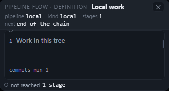
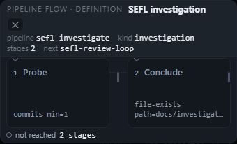
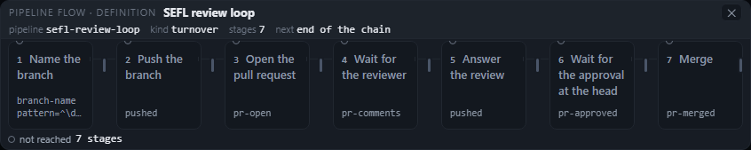
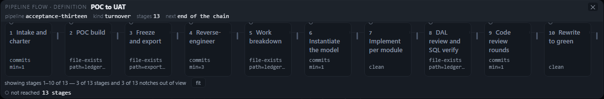
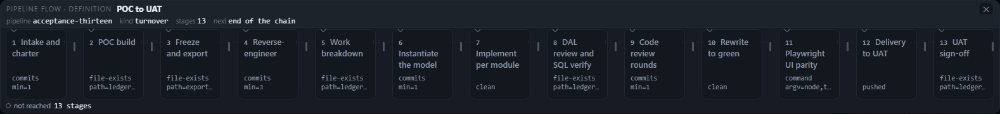
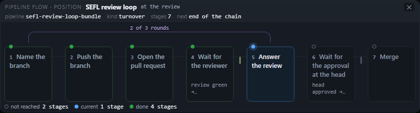

Eight captures of the flow dialog at one, two, seven and thirteen stages — at 1280×800 and 1824×900 — annotated for what the eye lands on, what the picture cannot tell you about order, loop-back, a gate and the live stage, and the exact element responsible for each. Two further shots show what the same renderer says when it is given a task's record.
The drawing succeeds at the thing a row of tiles is for. A reader can sweep one, two, seven or
thirteen stages left to right without a legend lesson: 13 px titles at 5.94:1, a 96 px column floor, 7 stages in an
846 px card at both widths, 13 stages in a 1578 px card at 1824 with all 13 tiles and all 13 notches in view. At
1280 the thirteen-stage card is 1229 px and hides 3 of 13, and it says so in a sentence built from the painted
rects — “showing stages 1–10 of 13 — 3 of 13 stages and 3 of 13 notches out of view” — with the fit
press beside it.
What it cannot say is the set of facts that makes the row a pipeline rather than a list.
Order is carried by an 11 px ordinal and a 1 px hairline, not by an edge; loop-back is never drawn in a definition
at all — the 7-stage definition is literally named “SEFL review loop” and is drawn as a straight chain, because
fromDefinition passes loops: []; a gate is a 3 × 15 px notch at 2.37:1
with no visible label, and its meaning exists only in a title and an aria-label; and the
definition dialog has no live stage to show — every one of its 13 tiles is not reached, and the mark
that would say otherwise is an 8 px dot whose fill is 1.04:1.
Two defects are visible without measuring. At two stages the header wraps and the ✕ lands at
the left edge of a second row, under the title (x 480.0 against x 776.2 at one stage), growing
the header to 39% of a 205 px card. At thirteen stages the one meta line is clamped at two lines in 6 of 13 tiles,
and the clamp cuts the path, so file-exists path=ledger/change-log.json reads
file-exists path=ledger… — the half that tells you which file is the half that disappears.
The captures measure 4651ace (1.12.2). origin/main has since moved to
5e84586 (1.12.3), and the drawing's own files are unchanged across that move:
git diff --stat 4651ace 5e84586 -- public/pipeline-flow.js public/pipeline-modal.js public/index.html
is empty, and the only public/app.js and public/style.css hunks are the reply-queue chip
work (app.js hunks 4179–5166, style.css:2430) — nowhere near openPipelineFlow (app.js:17396) or the
.pflow block (style.css:4056–4237). The numbers describe the code this page lands on; a later landing
that touches those rules should re-run the harness rather than edit the prose.
One harness, tools/capture-pipeline-readability.mjs, boots a throwaway panel of this checkout (its own
PANEL_CONFIG, pipelines.json, data dir and ephemeral port; assistant off; API server pointed
at a dead port) and drives the real dialog through Settings → Pipeline → a definition → open the flow. It
photographs the card — not a cropped element — at 1280×800 and 1824×900 and reads every number below from the page's
own DOM. Nothing under public/, lib/ or the shipped gates is touched; this is a capture, not
a judge.
| shot pair | definition | stages | exit checks | next | why this one |
|---|---|---|---|---|---|
| 01 · one | local — “Local work” | 1 | commits min=1 | end of the chain | the shortest card the dialog can draw; the case with no connector at all |
| 02 · two | sefl-investigate — “SEFL investigation” | 2 | commits min=1, file-exists path=docs/investigation.md (clamped) |
sefl-review-loop |
the shipped definition whose next names another pipeline — a chain fact with no edge |
| 03 · seven | sefl-review-loop — “SEFL review loop” | 7 | branch-name, pushed, pr-open, pr-comments,
pushed, pr-approved, pr-merged |
end of the chain | a name that promises a loop, and a drawing that cannot draw one |
| 04 · thirteen | acceptance-thirteen — “POC to UAT” | 13 | six shapes: commits, file-exists, clean, command,
pushed | end of the chain | the long case; the studio's own seed re-expressed in the panel's schema |
The three short definitions are read out of the tree's own pipelines.seed.json rather
than transcribed. The thirteen-stage one is the Pipeline Studio's seed (poc-to-uat, titles, writers and
artifacts) with ids made slugs because the catalogue refuses S0; the panel's definition schema has no
artifact field, so those fields are inert and each card's one meta line is its exit check — which is what
the definition dialog draws anyway.
Range over the text, not from a flex container's full-width box.rgba.line-height. “Clamped” means
scrollHeight > clientHeight, i.e. the two-line clamp is hiding words.scrollWidth against clientWidth, plus how many tiles and
notches are fully inside the scroller at rest. The count sentence is quoted from the element, not
recomputed here.No eye tracking, no colour-blindness simulation, no zoomed text, no hover/focus capture (the notch's tooltip is
quoted from its title attribute), and one palette — the panel pins its own colours, so a
prefers-color-scheme pair would be byte-identical rather than informative. The two position-mode shots
are the bundle adapter opened through the page's own PipelineModal.open, not a queue row's press; they
are evidence of what the renderer can draw, not of route A's caller.
local
| question | 1280×800 | 1824×900 | element responsible |
|---|---|---|---|
| Eye lands on | The dialog title “Local work” — 13 px/700 at 13.01:1, 65.8 × 18.8 px at the card's top-left. Then the facts row, which is 46% of the card's ink because it wraps to two lines at 340 px. | Same. The card is centred at x = 742, so the same two objects sit 272 px further right with the same type. | .pmodal-title public/style.css:4218; .pmodal-facts public/style.css:4227 |
| Order | Present but trivial: one tile and the ordinal “1” (11 px/600 at 5.94:1). There is no connector because there is no next stage; the card's width, not an edge, says where the sequence stops. | Same drawing; the single-column track is 322 px wide at both. | .pflow-n public/style.css:4129; stageHtml public/pipeline-flow.js:335 |
| Loop-back | Nothing to loop to. The only statement about continuation is the fact next end of the chain —
an 11 px label at 3.35:1 and a 12 px value at 13.01:1, in the header, not on the track. |
Same. | .pmodal-facts public/style.css:4227; openPipelineFlow public/app.js:17414 |
| Gate meaning | One notch, 3 × 15 px, #4a5568 at 2.37:1 against the tile — below the 3:1
non-text floor — on the tile's closing edge. Its meaning is title="gate exit:work · commits — exit check
commits — min=1" (51 chars) and an 111-char aria-label. The tile's floor prints
commits min=1 at 11 px/5.94:1, which is the one visible half of the gate. |
Same. | .pflow-notch public/style.css:4156; notchHtml public/pipeline-flow.js:291–296 |
| Which stage is live | None is: the definition dialog has no position, so every tile is data-mark="not-reached", its
title is painted #8b96a5 (5.94:1), and the mark is an 8 px dot whose fill is
1.04:1. The legend says “not reached 1 stage” at 11 px/6.78:1 — the only sentence that
nothing has run. |
Same. | .pflow-dot public/style.css:4130; .pflow-node[data-mark="not-reached"] .pflow-title public/style.css:4143; marksFor public/pipeline-flow.js:215–232 |
Shot note. This is the most readable case in the set and also the least typical: a 322 px column gives “Work in this tree” 300 px of line, and the detail line sits on the tile's floor. The header is 32% of the card because the facts row wraps at 340 px — the close control still keeps the first row (x = 776), so the wrap costs a line rather than moving a control.
sefl-investigate
x 480, y 72.8.| question | 1280×800 | 1824×900 | element responsible |
|---|---|---|---|
| Eye lands on | “SEFL investigation” (13 px/700 at 13.01:1, 110.8 × 18.8 px) — and immediately under it the ✕ at
x 480, y 72.8, on the second row's left edge. The contrast of a control where a title's baseline
was is the first thing the audit did not expect. |
Same two objects; the ✕ is still at the left of row two. The card is centred at x = 742. | .pmodal-bar public/style.css:4216; .pmodal-close public/style.css:4225 |
| Order | Two tiles, one 26 × 1 px connector at #212730, and a 6 × 5 px corner bracket at the
connector's left end — a tick, not an arrowhead. The ordinals “1” and “2” are the reliable direction cue. |
Same drawing; columns are 148 px at both widths, so the two tiles do not narrow or widen with the window. | .pflow-link public/style.css:4150; .pflow-link::before public/style.css:4155 |
| Loop-back | None drawn. The chain continues to sefl-review-loop, and that fact is the brightest value in
the header — 12 px mono at 13.01:1 — but it is a sentence, not an edge; the track ends at stage 2 with a
closing notch. |
Same. | openPipelineFlow public/app.js:17414; fromDefinition public/pipeline-flow.js:145–149 |
| Gate meaning | Two notches, both #4a5568 at 2.37:1, both data-state="open". The visible half is
again the tile's floor: commits min=1 and file-exists path=docs/investigation.md —
the second is clamped at two lines and the path is the part cut, so the painted text ends
path=docs/investigat…. |
Same. | .pflow-art public/style.css:4128; stageDetail public/pipeline-flow.js:302–315 |
| Which stage is live | Neither: both not-reached, both dots 1.04:1. The legend says “not reached 2 stages”. |
Same. | .pflow-dot public/style.css:4130; legendHtml public/pipeline-flow.js:423–437 |
Shot note. The wrap is arithmetic: the kicker is 166.3 px, the title 110.8 px and the close
23.8 px; with the 8 px gaps that is 316.9 px of a 320 px inner row, and the 2.7 px spacer left over is too small for
the close's 8 px gap, so .pmodal-bar's flex-wrap: wrap puts the ✕ on the next line at the
left edge. The close has no automatic margin and the title cannot shrink (flex: 0 0 auto), so the one
control that must stay findable moves.
sefl-review-loop
| question | 1280×800 | 1824×900 | element responsible |
|---|---|---|---|
| Eye lands on | The stripe: seven equal tiles at 96 px, then the first title “Name the branch”. Ink is split almost evenly — stage titles 28%, header facts 26%, exit-check lines 24% — so there is no single object with a clear claim to the first fixation beyond reading order. | Same stripe, same split; the card is centred and the drawing does not reflow. | .pflow-track public/style.css:4082; .pflow-title public/style.css:4125 |
| Order | Six 26 px connectors and seven ordinals; titles wrap to 1–3 lines within the same row (“Wait for the
approval at the head” is 3, “Merge” is 1), and align-items: stretch keeps all seven tiles the
same height. Order reads; the direction is a hairline plus the numbers. |
Same. | .pflow-track public/style.css:4082; .pflow-link public/style.css:4150 |
| Loop-back | Nothing. The definition is named “SEFL review loop”, its stages are a straight chain, and
the only statement about what follows is next end of the chain. A reader looking for the review
loop finds no arc, no return edge and no occurrence of the word “loop” in the drawing. The renderer can draw
one — the position shots below do — but fromDefinition never passes any. |
Same absence; the extra width only adds margin. | fromDefinition public/pipeline-flow.js:145–149
(loops: []); the absent .pflow-arc
public/style.css:4163 |
| Gate meaning | Seven notches, all #4a5568 at 2.37:1, all data-state="open". The floor lines are
the exit checks — branch-name, pushed, pr-open, … — but stage 1's line
is clamped: the regex sentence is cut after two lines, so the reader gets the pattern without its branch
placeholder. |
Same; one of seven lines clamped. | .pflow-notch public/style.css:4156; .pflow-art public/style.css:4128 |
| Which stage is live | None: seven not-reached tiles, seven dots at 1.04:1, and the legend “not reached 7 stages”
(11 px/6.78:1). The kicker “PIPELINE FLOW · DEFINITION” at 11 px/3.35:1 is the only thing that says this is a
definition and not a run — and it is the dimmest text in the card. |
Same. | .pmodal-kicker public/style.css:4217; legendHtml public/pipeline-flow.js:423–437 |
Shot note. This is the shot where the name and the picture disagree most: “SEFL review loop” over a straight chain that ends in “end of the chain”. Nothing in the visible drawing is wrong — a definition really is a chain — but the one word a reader brings to it, loop, has no counterpart on the canvas.
acceptance-thirteen

| question | 1280×800 | 1824×900 | element responsible |
|---|---|---|---|
| Eye lands on | The visible stripe of ten tiles, then the count row — the only sentence in a drawing of fragments (“showing stages 1–10 of 13 — 3 of 13 stages and 3 of 13 notches out of view”, 11 px/6.78:1, 8% of ink). Ink is 35% exit-check lines, 29% stage titles, 16% header facts: the meta line outweighs the names. | The full thirteen-tile stripe; ink is 38% exit-check lines and 31% stage titles. The dialog title “POC to UAT” is the only text at 13.01:1 — 71 × 18.8 px — while every stage title is 5.94:1. | .pflow-count public/style.css:4189; .pflow-art public/style.css:4128; .pmodal-title public/style.css:4218 |
| Order | Twelve connectors and thirteen ordinals; the clip is clean — tile 10 ends at 1228.6, the scroller at 1245.4, tile 11 starts at 1254.6 — so no tile is cut mid-word, and the count's “1–10” is the only place the visible range is stated. | Twelve connectors and thirteen ordinals, all visible; the row reads in one sweep. | .pflow-link public/style.css:4150; countText public/pipeline-flow.js:447–459 |
| Loop-back | None, and none possible from this fixture: next end of the chain, no arc, no return edge. |
Same. | fromDefinition public/pipeline-flow.js:145–149 |
| Gate meaning | Thirteen notches, all #4a5568 at 2.37:1, all data-state="open"; 0.2% of the
card's ink. Their aria names run 111–145 characters and lead with “no decision record is declared”, while the
hover titles run 51–86 and lead with the check (“exit check file-exists — path=…”). The visible card floor
carries a two-line clamp, and 6 of the 13 are hiding text. |
Same thirteen notches and the same 6 clamped lines; the wider card does not lengthen the columns, so the clamp is identical. | .pflow-notch public/style.css:4156; gateAria public/pipeline-flow.js:274–285; .pflow-art public/style.css:4128 |
| Which stage is live | None: all 13 not-reached; the legend says “not reached 13 stages” (11 px/6.78:1). Thirteen
8 px dots at 1.04:1 are the only per-stage mark and they read as bullets. |
Same. | .pflow-dot public/style.css:4130; .pflow-legend public/style.css:4174 |
Shot note. The two widths are one drawing: 96 px columns, 26 px gaps, the same titles and the same wrapped lines. What changes is how much of it the card can hold — 1229 px of card clips at tile 10, 1578 px holds all thirteen — and whether the count row is owed. That is a good responsive decision: the drawing does not reflow, so a reader does not learn a second layout at 1824. The cost is that at 1280 the right edge is a hard cut with 16.8 px of empty scroller after tile 10, and nothing but the 11 px sentence says the chain continues.
These two shots are the control for the four questions. The same renderer, given a bundle with one capped loop and a position record, draws the loop-back as an arc and marks the live stage — so the gaps above are the definition adapter's and the caller's, not the drawing's inability.

#b9a2e0; current tile at #141f2c, border #2b5480.| question | 1280×800 | 1824×900 | element responsible |
|---|---|---|---|
| Eye lands on | The arc label “2 of 3 rounds” — the only purple text in the card, above the row — then the blue current tile (“Answer the review”), the only tile with a blue border and a lit dot. | Same. The arc is 488 px wide at both widths because the columns and gaps are the same. | .pflow-arc-label public/style.css:4173; .pflow-node[data-mark="current"] public/style.css:4136 |
| Order | Seven tiles, six connectors, and one drawn back edge: the arc leaves “Answer the review” (stage 5) and re-enters “Name the branch” (stage 1), running over stages 1–5 in its own 22 px lane. This is the one shot in the audit where order is a graph rather than a list. | Same. | .pflow-arc public/style.css:4163; arcsHtml public/pipeline-flow.js:394–421 |
| Loop-back | Drawn and labelled, once: H-10, “2 of 3 rounds”, with the cap as a sentence because the
bundle carries a sentence rather than numeric limit/used. The arc is legible as a
bracket over the five stages it spans. |
Same. | .pflow-arc public/style.css:4163; arcsHtml public/pipeline-flow.js:394–421 |
| Gate meaning | Two gates, two states, two colours: G1 after “Wait for the reviewer” is
data-state="answered" and painted #6f8f5a (4.88:1); G2 after “Wait for
the approval at the head” is ahead and painted #4a5568 (2.37:1). The meaning is
still only in the aria/title, and the detail line is painted inside the preceding tile:
“review green → decisions/review.json” sits on stage 4's floor, although the gate is on the connector after
it. The same gate is drawn twice, in two places, with no link between them. |
Same. | .pflow-notch public/style.css:4156; stageDetail public/pipeline-flow.js:302–315; stageHtml public/pipeline-flow.js:329 |
| Which stage is live | Stage 5, on four channels: blue dot #58a6ff (5.28:1 for the green done dot; the current dot's
ring is stronger), tile background #141f2c vs #13181f, border
#2b5480 vs #212730, and title #e6e9ef/600 vs #9aa4b2/500.
The legend says “done 4 stages · current 1 stage · not reached 2 stages”. |
Same. | .pflow-node[data-mark="current"] public/style.css:4136–4138; marksFor public/pipeline-flow.js:215–232 |
Shot note. The arc is the strongest thing the renderer does: 488 px of purple over five columns, with a label that is a fact. Two things keep it from being the answer to the definition dialog: no definition can reach it, and the gate the arc is about is drawn twice — once as an unlabelled 3 px notch on the connector, once as a 11 px sentence on the preceding tile's floor.
The drawing earns its keep at every length measured here. It is a row, not a diagram, so thirteen stages read in
one sweep; the columns hold a 96 px floor, so a title is never squeezed into a strip; the card sizes to its drawing
(340 → 846 → 1578 px) instead of to the window, so one stage is a small panel and thirteen get the width they need;
every tile in a row is the same height with its detail pinned to the floor (align-items: stretch), so
seven titles of one, two and three lines still form a table rather than a ragged strip; the stage title is 13 px at
5.94:1 and the ordinal 11 px at 5.94:1, both above AA for their size; the count under the drawing is a measurement
of the painted rects, not a constant — 10 of 13 at 1280, 13 of 13 at 1824 — and it appears only when something is
actually out of view, with the fit press beside it; the gate notch is positioned by the same grid
custom properties as the column it follows, so it cannot drift from the tile; the legend counts the marks the
drawing actually carries and gives each one its noun; and the same 96 px drawing is used at both widths, so the
difference between 1280 and 1824 is how much of it you see, not a second layout to learn. None of that is undone by
the findings below: they are about what the row does not say, and one header that wraps.
| # | severity | finding | evidence | where |
|---|---|---|---|---|
| F1 | high | The gate mark is the least visible object in the drawing, and its meaning is not on it. A gate is a 3 × 15 px bar at 2.37:1 in every edit-mode shot — below the 3:1 non-text floor — with no label, no icon and no visible state. It is 0.2% of the card's ink at thirteen stages. | Notch 3 × 15, #4a5568, 2.37:1; all 13 data-state="open"; titles 51–86 chars,
aria 111–145 chars; 0.2% of 402,575 ink units. |
public/style.css:4156; public/pipeline-flow.js:291–296 |
| F2 | high | A definition can never show a loop-back, and its name can promise one.
fromDefinition passes loops: []; the 7-stage “SEFL review loop” is drawn as a
straight chain ending in “end of the chain”. The renderer draws loops in position mode, so this is an adapter
gap, not a renderer one. |
0 arcs in 8 edit-mode shots; 1 arc (488 × 22, “2 of 3 rounds”) in the position pair;
fromDefinition at line 148. |
public/pipeline-flow.js:145–149 |
| F3 | medium-high | In edit mode a stage's title and its meta line are the same colour, two pixels apart in size.
Every tile is not-reached, so the title falls to --pflow-ink-quiet; the exit check is
painted the same token. At 13 stages the meta line is 35–38% of the ink and the names 29–31%, so the machine
sentence outweighs the human one. |
Title 13 px/5.94:1 and detail 11 px/5.94:1 on every edit-mode tile; ink shares from
capture.json. |
public/style.css:4125, 4128, 4143 |
| F4 | medium | The two-stage header wraps the ✕ to the left of a second row. At 340 px the kicker, title
and close exceed the inner row by 2.7 px; flex-wrap moves the close to x 480.0 from
x 776.2, under the title, and the header grows to 79.6 px — 39% of a 205 px card. |
Close rect: {x:480.0, y:72.8} at 2 stages vs {x:776.2, y:52} at 1; bar 79.6 vs
43.4 px. |
public/style.css:4216, 4225 |
| F5 | medium | The not-reached dot is invisible, so thirteen unrun stages look like a bullet
list. The dot's fill is 1.04:1 against its tile and its 1 px border is --line; the only
mark that a tile is “not reached” is a ring you cannot see. The legend carries the fact instead. |
Dot 8 × 8, fill #171c24, 1.04:1; border #212730; 13 of 13 in every edit-mode
shot. |
public/style.css:4130, 4143 |
| F6 | medium | The one meta line is clamped at two lines, and the clamp cuts the path. 6 of 13 tiles at
thirteen stages and 1 of 7 at seven stages hide text; the visible half is
file-exists path=ledger…, so the file is the part lost. |
scrollHeight > clientHeight on 6/13 and 1/7; longest value
branch-name pattern=^… clamped to two lines. |
public/style.css:4128; public/pipeline-flow.js:329 |
| F7 | medium | A gate's detail is painted inside the preceding stage's tile, so it reads as that stage's output. In position mode “review green → decisions/review.json” sits on stage 4's floor while the gate is on the connector after stage 4; the same gate is also an unlabelled notch on that connector. Two representations, no link. | Card 4 detail text and notch G1 on the same edge; 1 tile + 1 notch for one gate. |
public/pipeline-flow.js:302–315, 329 |
| F8 | low | The kicker and the fact labels are 3.35:1 at 11 px — below the 4.5:1 AA floor for normal text. They are the words that tell a reader this is a definition, not a run. | Kicker #6b7482 on #1d232b = 3.35:1; fact label <i> same
token. |
public/style.css:4217, 4229 |
| F9 | low | At 1280 the thirteen-stage drawing hides three stages — but it says so, the clip is clean (no tile cut mid-word) and the fit press is offered. This is a trade the design made deliberately; the finding is only that the right edge carries no other cue. | Scroller 1211 / 1560, 349 hidden; count “showing stages 1–10 of 13 — 3 of 13 stages and 3 of 13 notches out of view”; tile 11 starts at 1254.6, scroller ends at 1245.4. | public/pipeline-flow.js:447–459; public/style.css:4187 |
data-state the renderer already writes to colour — open/ahead
#8b96a5 (6.05:1), waiting #d29922, answered/closing
#6f8f5a — so the five states stop sharing one grey. Add the state word as ::after on
hover/focus, because the title is invisible in a screenshot and to touch.data-mode="definition" to the
.pflow element and, under it, paint .pflow-title at var(--text); leave the
ordinal and the exit-check line at --pflow-ink-quiet. The four marks still read in position mode, and
the definition becomes a list of names rather than a list of two equal greys..pmodal-title { flex: 0 1 auto; min-width: 0; overflow: hidden; text-overflow: ellipsis; white-space:
nowrap }) or give the close margin-left: auto and keep the first row non-wrapping; the facts
row is already flex: 0 0 100% and can be the only thing that wraps.def.next is set, draw a 26 px stub with an arrow
and the id at the track's right edge — the same width as a connector — instead of leaving the fact in 11 px text.
When it is not, print “a definition is a chain — loops appear on a task's record” once in the legend, so the
absence of an arc is named rather than inferred.not-reached (the legend already says so), or give it a 2 px ring at
#8b96a5.file-exists …/change-log.json is more useful than file-exists path=ledger….node tools/capture-pipeline-readability.mjs --shots docs/reviews/pipeline-readability-audit
It boots its own panel, writes the ten PNGs and capture.json beside them, and exits 0. The panel
address is printed on the first line; the run takes about twelve seconds. Pass --root to point it at
another checkout (a git archive of main, for a before/after). The ledger holds every number
quoted here: per shot, the card and bar rects, the scroller, every tile's rect and computed style, every notch's
state and both of its names, the arc geometry, the ink groups and the PNG's SHA-256.
| file | bytes | sha256 (first 12) |
|---|---|---|
01-one-1280.png | 9,206 | 86a312200e54 |
01-one-1824.png | 9,194 | f856708176b4 |
02-two-1280.png | 13,114 | f60adc181c0f |
02-two-1824.png | 12,960 | 05e20346353b |
03-seven-1280.png | 20,700 | 6bccaa322cd4 |
03-seven-1824.png | 20,698 | b65b419a5c72 |
04-thirteen-1280.png | 29,360 | 6e7d5af0c14f |
04-thirteen-1824.png | 30,472 | be25093130b5 |
09-seven-position-1280.png | 27,559 | 39a0a01e9f37 |
09-seven-position-1824.png | 27,590 | bdf53bbc18f7 |
capture.json | 108,980 | the ledger: 10 records, every number above |
artifact field,
so the thirteen-stage cards print their exit checks, not “writes …”. That is the shipped behaviour.PipelineModal.open with the same arguments a caller passes; they prove what the renderer can draw,
not what route A's caller supplies.title; the current dot's breathe animation is off in the position shots' effect because the capture
waits for layout, but the mark is a static colour too.4651ace (1.12.2); the branch was then rebased onto 5e84586 (1.12.3) and the path check
above proves the drawing's files did not move. A later landing that changes
public/pipeline-flow.js, pipeline-modal.js or the .pflow* rules makes the page
stale — re-run the harness rather than editing the prose.